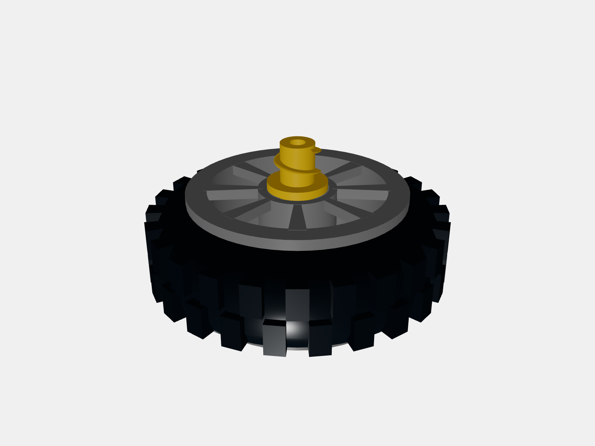
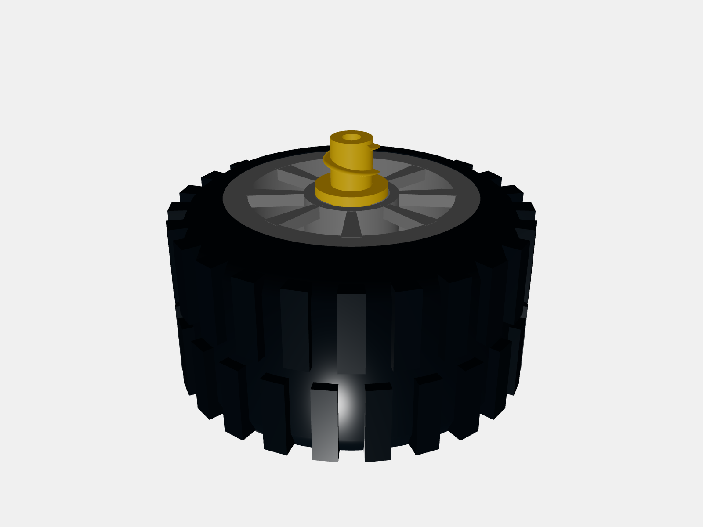

本地草稿已更新；未推送、未发布、未作实物验收。
确认44970=31352且配套99565。参考持有者的实物照片与测量，轮胎宽从36改为约64.5 LDU，孔径从76改为80 LDU，恢复厚胎与凸起胎纹。轮芯及螺杆外端配套延长20 LDU，安装面、螺杆尖端和16 LDU行程保持原坐标。轮芯宽度和胎纹细节仍为照片推定。


两个R40接触环使用相同64个顶点；轮胎/轮芯未检出三角面交叉。螺杆行程0、4、8、12、16 LDU均未检出与轮芯穿插，法线方向单独复查。这里只证明名义几何接触，不证明橡胶弹性、摩擦防脱或制造公差。
导弹车保留原有螺杆轴线，伸出螺杆对准新增砖的接收孔；上层悬臂仍为半幅支撑，稳定性需实体核验。整车相交候选9→7，剩余7对是原有座舱、窗及罩壳接触，不是整车通过实搭。
检查所有涉及改变轮组的零件对，复用几何未变的其他零件对；导弹车整车重算。31课均未检出轮组对外新增穿插。全部300课依赖、变换和基础检查重跑：无缺失依赖和实体非刚体变换，20处既有绳索表达另列；234课基础检查未报错，66课保留225条包围盒提示。
完整300课结果 · 本轮摘要与未解决项 · 依赖覆盖证明 · 零件检查 · 螺杆行程检查
| 课程 | 整课相交候选：前 → 后 |
|---|---|
| 4-cha-che.ldr | 8 → 8 |
| 4-chun-jie-wu-shi.ldr | 0 → 0 |
| 4-da-long-xia.ldr | 0 → 0 |
| 4-da-xiang.ldr | 0 → 0 |
| 4-dao-dan-che.ldr | 9 → 7 |
| 4-diao-che.ldr | 9 → 9 |
| 4-du-jiao-xian.ldr | 0 → 0 |
| 4-ji-guan-qiang.ldr | 0 → 0 |
| 4-ju-ji-qiang.ldr | 0 → 0 |
| 4-jun-jian.ldr | 22 → 22 |
| 4-ke-ji.ldr | 6 → 6 |
| 4-long-men-diao.ldr | 3 → 3 |
| 4-qing-ting.ldr | 0 → 0 |
| 4-sai-che.ldr | 0 → 0 |
| 4-sheng-jiang-jiu-yuan-che.ldr | 14 → 14 |
| 4-shou-ge-ji.ldr | 7 → 7 |
| 4-tang-lang.ldr | 0 → 0 |
| 4-tui-tu-ji.ldr | 4 → 4 |
| 4-tuo-gua-che.ldr | 0 → 0 |
| 4-wa-li.ldr | 1 → 1 |
| 4-wu-ren-ji.ldr | 0 → 0 |
| 4-xiang-wei-she.ldr | 0 → 0 |
| 4-xiao-tu-zi.ldr | 0 → 0 |
| 4-xie-zi.ldr | 0 → 0 |
| 4-ya-lu-ji.ldr | 9 → 9 |
| 4-yao-yao-ma.ldr | 0 → 0 |
| 4-yi-long.ldr | 0 → 0 |
| 4-you-wen.ldr | 0 → 0 |
| 4-zhi-zhu.ldr | 0 → 0 |
| 4-zhong-guo-long.ldr | 0 → 0 |
| 4-zuan-tu-che.ldr | 9 → 9 |
圆门铰链插入深度/保持结构、轮组精确尺寸与防脱、手推飞机小齿轮与轴承砖干涉，以及各课程既有座舱/窗框等问题仍待核。飞机小齿轮简单上移会带来支撑或脱啮问题，本轮未采用该猜测。未检出相交不等于实体一定能搭。